Traducción de la interfaz y la información de los parámetros, a los lenguajes: Catalán (Montserrat Gelis Bosch), Euskera (Xabier Lakunza Zumeta), Gallego (Emilio Pazo Núñez y Xosé Eixo Branco) y Valenciano.
Versión v1.017
El parámetro dibujar-si en los macros 3D era ignorado, por lo que siempre se dibujaban.
El parámetro familia en los macros 3D era ignorado, solo se creaba un objeto macro.
Se eliminaron las primeras dos líneas que se agregaban al exportar un macro, correspondientes al tipo_de_macro y al Idioma, ya que no son necesarias.
Al utilizar un macro 2D se incluye automáticamente el contenido del macro dentro del documento html, para que funcionen de forma local en los navegadores. Se agregó la misma funcionalidad para los macros 3D.
Versión v1.016
Se agregó el submenu "Notas de la versión" al menú ayuda, para mostrar los cambios realizados en cada nueva versión del editor.
Se agregó numeración de las líneas en el editor de texto de código de la escena.
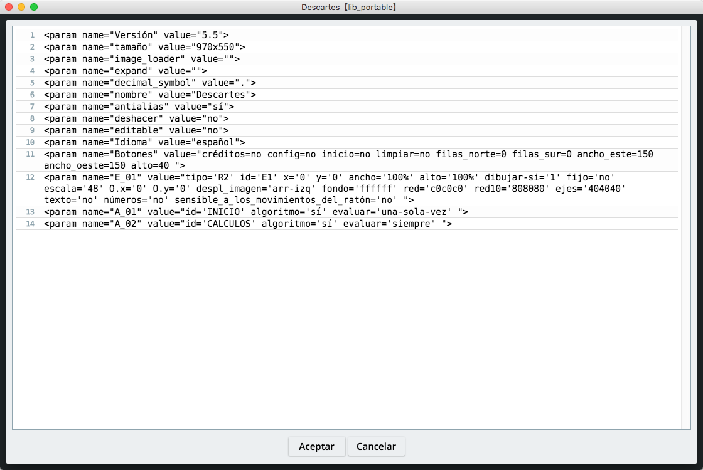
Código de una escena con las líneas numeradas.
Se cambio la tipografía utilizada para los bloques de código, por una que tuviera una mejor diferencia entre el 1 (número 1) y l (letra l).
Diferencias entre el número 1 y la letra l.
Versión v1.015
Limpieza y reestructuración de código interno, para mantenerlo mejor organizado ya que había archivos con información de más o innecesaria resultado de pruebas previas de desarrollo.
Corrección en el editor de textos enriquecidos al cortar y pegar un bloque de texto que contenía una formula, ya que en algunas ocasiones al pegar el contenido copiado el contenido del editor de texto se corrompía.
Versión v1.014
Se agregaron los parámetros, fuente, tam fuente, negrita y cursiva, a los objetos gráficos de dos dimensiones de tipo: punto, segmento, flecha y arco; y a los objetos gráficos de tres dimensiones de tipo: punto y texto. Para homogeneizar los parámetros para configurar textos simples (sin fórmulas).
Se agregó el parámetro coord abs, a los gráficos de tipo texto, ya que eran los únicos gráficos de dos dimensiones que no se podían especificar en coordenadas relativas. Era necesario utilizar un punto para colocar un texto en coordenadas relativas.
En los controles, el menú que muestra los espacios creados se desactiva si el valor del parámetro región no tiene el valor interior.
Se agregó un menú para seleccionar el tema de colores de la interfaz gráfica, actualmente se presentan dos opciones, claro (la opción por defecto) y obscuro.
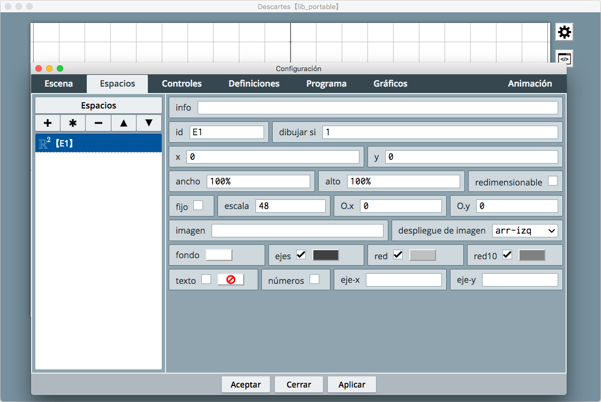
Tema de color claro.
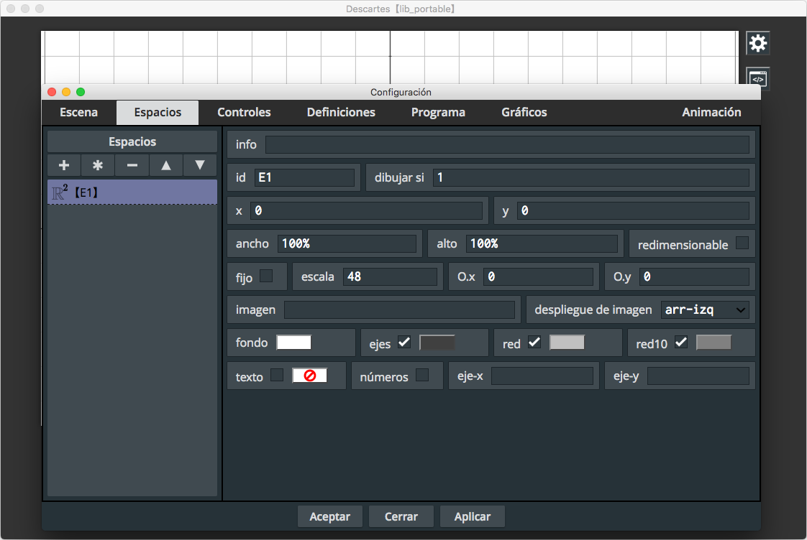
Tema de color obscuro.
Versión v1.013
A los controles de tipo botón se les agregó el parámetro fuente, para cambiar la tipografía que utilizan, anteriormente los botones utilizaban de forma fija una tipografía de tipo Sans Serif.
A los gráficos de tipo texto se les agregó los parámetros:
fuente, que permite cambiar la tipografía de forma externa.
Negrita, para cambiar de manera externa si el texto se dibuja en negrita.
cursiva, para cambiar de manera externa si el texto se dibuja en itálica.
tam fuente, que permite cambiar el tamaño de la tipografía de forma dinámica.
Anteriormente había que entrar al panel de edición de texto simple para modificar estos parámetros y con esta adición se agiliza la edición de textos simples.
A los espacios se les agregó un nuevo parámetro redimensionable, para modificar de forma dinámica las dimensiones de los espacios. Anteriormente, los espacios no podían tener dimensiones especificadas con variables, ni tampoco podían tener un tamaño mayor al de la escena. Con esta adición los espacios se vuelven más flexibles y se facilita la creación de escenas que se ajustan a diferentes tamaños de pantalla.
Versión v1.012
Se agregó el objeto gráfico rectángulo a los espacios 2D.
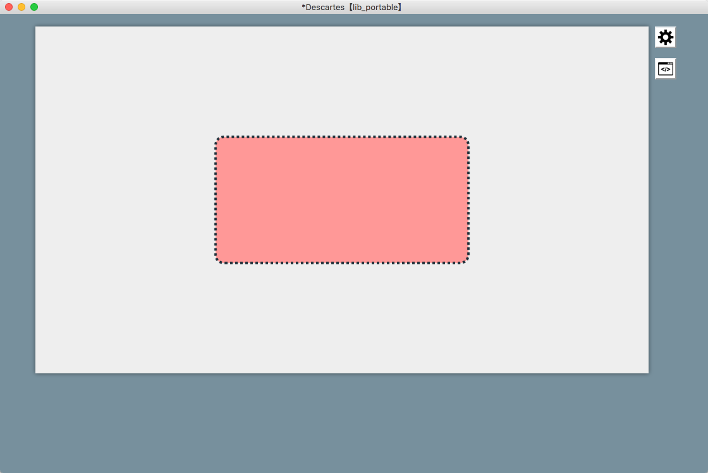
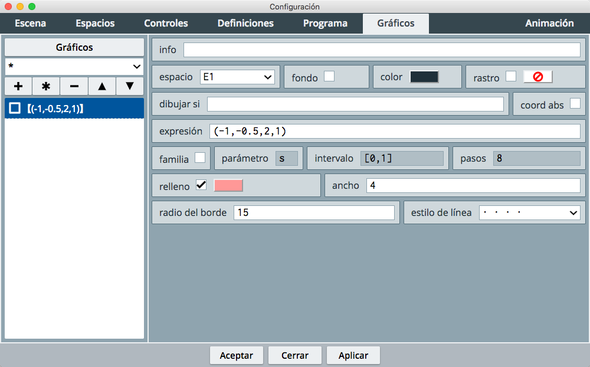
Ejemplo que muestra el nuevo objeto gráfico de tipo rectángulo y sus parámetros de configuración.
Versión v1.011
Se mejoró la función utilizada para calcular la perspectiva en espacios 3D.
Se agregó un nuevo gráfico a los espacios 3D, el toro.
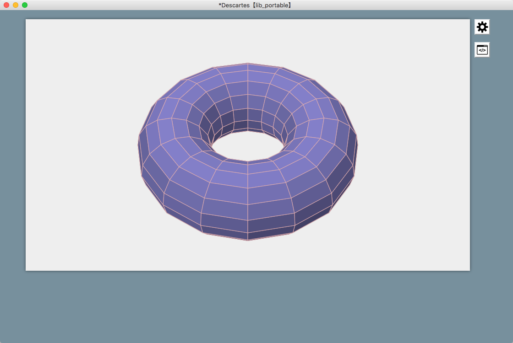
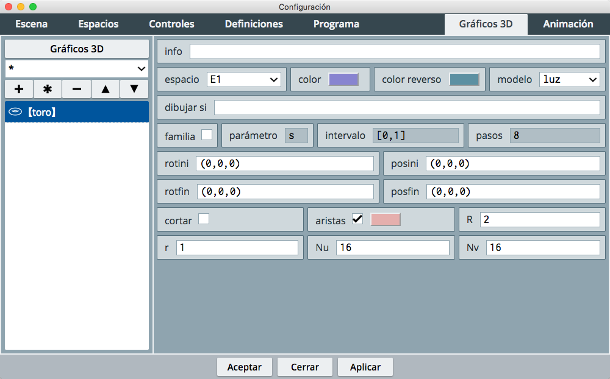
Ejemplo que muestra el nuevo objeto gráfico de tipo toro y sus parámetros de configuración.
Versión v1.010
Al control de tipo casilla de verificación se le agregó la funcionalidad para que también pueda funcionar como un radio botón en caso de ser necesario. Un radio botón en comparación con una casilla de verificación solo puede marcar una opción (en lugar de varias) entre un listado de alternativas.
Versión v1.009
Se agregó un nuevo control de tipo casilla de verificación (checkbox), con la finalidad de permitir a los usuarios tener un control simple para marcar una o varias opciones entre un listado de alternativas.
Versión v1.008
Se agregó un botón en la pantalla de visualización de la escena, debajo del botón que muestra la configuración, el cual permite mostrar y editar directamente el código de una escena.
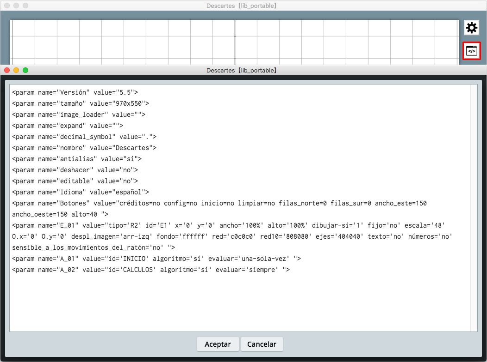
Botón para editar el código de la escena (marcado en rojo).
Edición preliminar de escenas tipo Arquímedes, ahora es posible abrirlas en el editor y modificar los parámetros de espacios, controles y gráficos de manera rudimentaria. La edición del texto principal aún presenta problemas.
Versión v1.007
Mejoras en la organización del código para el soporte de idiomas en la interfaz de edición, preparando al editor para incluir de manera sencilla todos los idiomas que soportaba el editor anterior en Java.
Se agregó la traducción al idioma inglés, tanto en la interfaz de edición como en el lenguaje de guardado de la escena.
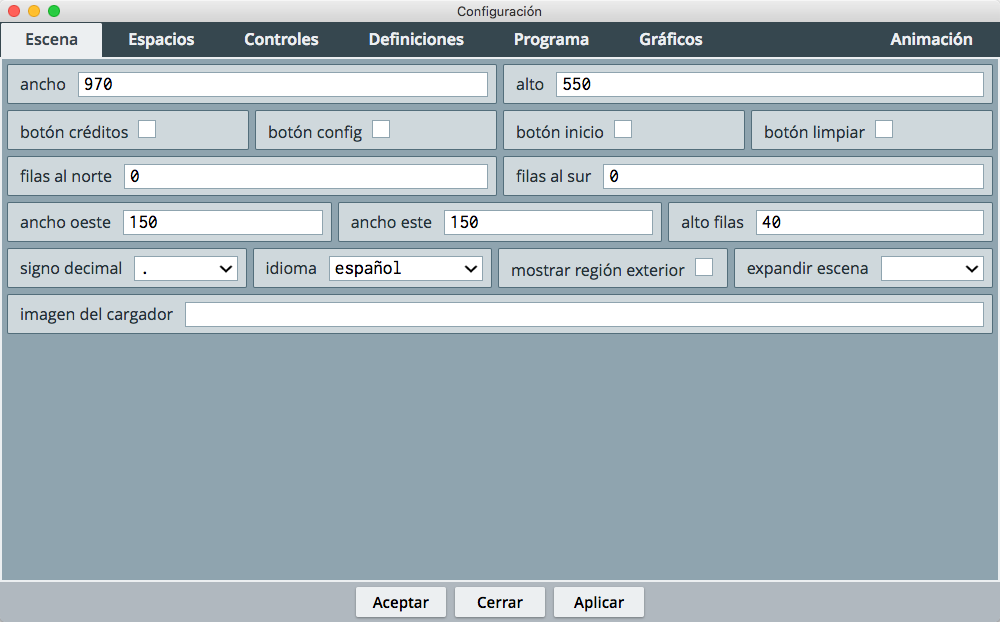
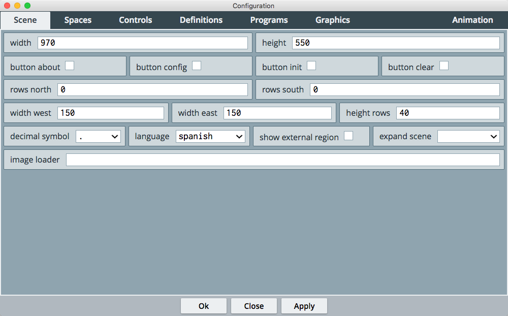
Interfaz de edición en español (arriba) e inglés (abajo).
Versión v1.006
El editor presentaba un comportamiento anómalo con el parámetro rastro, el cual ocurría al tener un gráfico con el rastro activado, al desactivarlo el editor se bloqueaba y dejaba de funcionar.
Versión v1.005
Se realizaron correcciones en la redacción de los textos de las descripciones emergentes de los parámetros, es decir, los textos que aparecen al colocar el cursor sobre un parámetro. También se agregaron descripciones de los parámetros nuevos y sin documentar.
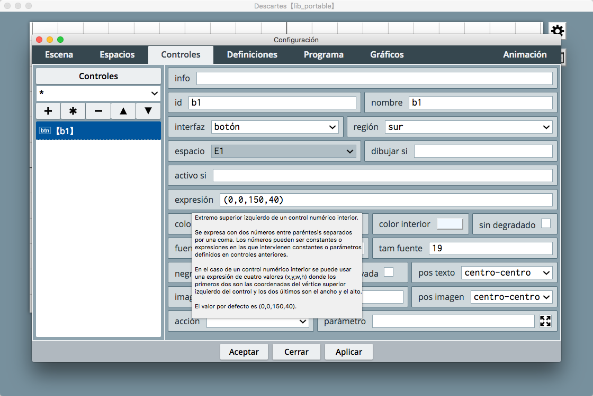
Descripción emergente del parámetro expresión de un control de tipo botón.
Versión v1.004
Se agregaron nuevos atributos a los botones:
borde del texto, que permite seleccionar si el texto del botón lleva borde y cuál es su color.
sin degradado, que permite remover el degradado de los botones, creando un botón con una apariencia más plana.
pos texto, que permite ubicar el texto respecto a los bordes del botón, con las siguientes opciones: arriba-izquierda, arriba-centro, arriba-derecha, centro-izquierda, centro-centro, centro-derecha, abajo-izquierda, abajo-centro y abajo-derecha.
pos imagen, que permite ubicar la imagen respecto a los bordes del botón, con las siguientes opciones: arriba-izquierda, arriba-centro, arriba-derecha, centro-izquierda, centro-centro, centro-derecha, abajo-izquierda, abajo-centro y abajo-derecha.
Versión v1.003
Se agregó funcionalidad a la consola de errores, ahora el contenido se desplaza al final de los mensajes para mostrar siempre los últimos mensajes escritos. Y al cerrar la consola se limpian los mensajes anteriores.
Versión v1.002
NW.js (https://nwjs.io/) es el componente que permite la ejecución como una aplicación nativa en los tres sistemas operativos (Windows, Linux y OS X) donde funciona el editor. Se actualizó NW.js a la versión v0.20.3, para aprovechar los parches de seguridad y las optimizaciones incorporados en dicha versión.
Se realizó una corrección en el panel de edición de textos simples, ya que al agregar un salto de línea en su lugar se agregaban dos saltos de línea, creando un espaciado erróneo en los textos.
Versión v1.001
En la lista de elementos creados, se agregaron iconos representativos para espacios y controles, para simplificar la identificación de los elementos creados y homogeneizando la representación con las demás listas de elementos dentro del editor.
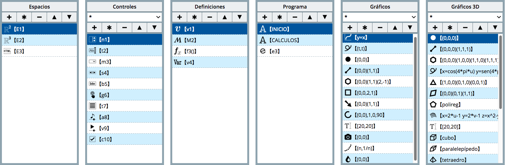
Nuevos iconos en las listas de elementos creados, para espacios y controles, junto a las listas de los demás elementos.
Versión v1.0
En el panel de edición de colores se corrigió un problema que ocurría al escribir el valor de un color en hexadecimal con mayúsculas, ya que en ese caso siempre asignaba el color negro (#000000), lo cual era un comportamiento incorrecto.
La opción de agregar un nuevo control numérico se dividió en varias opciones para crear de forma directa controles del tipo: pulsador, botón, menú, campo de texto y barra, minimizando el número de clics que el usuario debe dar para crear uno de estos controles.
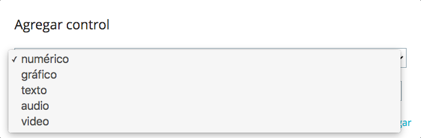
Menú anterior para crear controles.
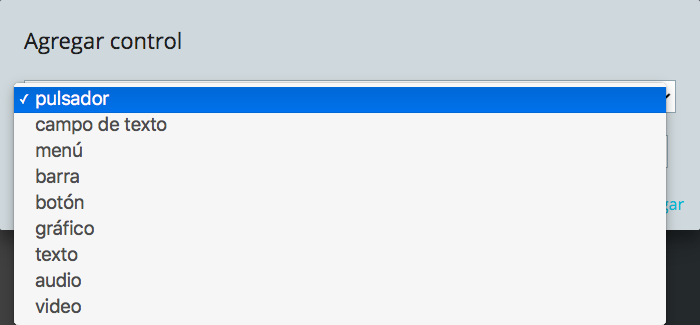
Nuevo menú para crear controles.
Versión v0.22
Se agregó una consola, donde se presentan los textos escritos con las funciones _Trace_ y _Print_, así como los errores de parseo encontrados por el intérprete.
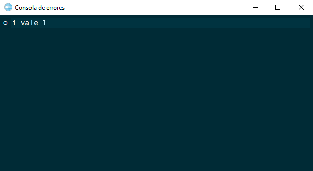
Ventana de la consola.
Se agregó el menú "Abrir reciente", que muestra una lista con las ultimas 12 escenas abiertas.
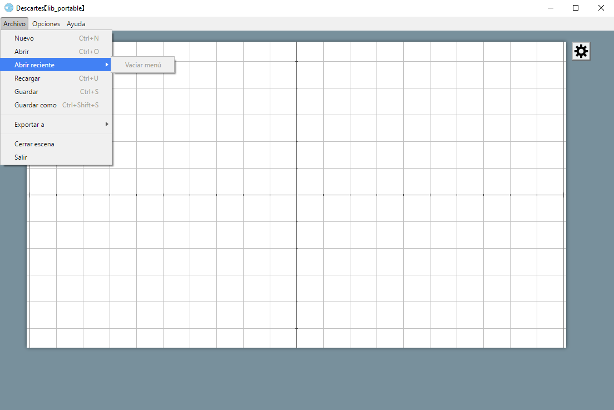
Menú "Abrir reciente".
En los editores de texto se agregó un botón para mostrar una tabla de símbolos, lo que permite insertar diversos símbolos no presentes en el teclado.
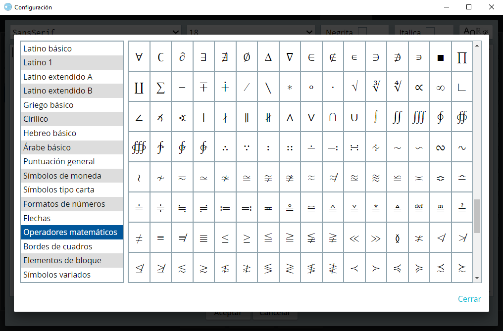
Tabla de símbolos.
Versión v0.21
Se agregó el parámetro alinear para modificar la alineación del texto a la izquierda, a la derecha o centrado.
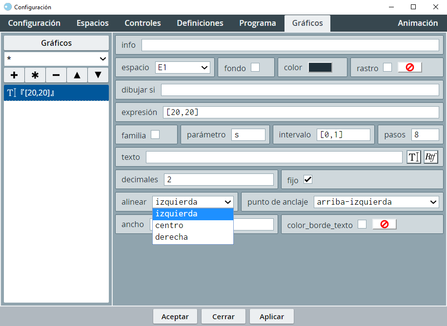
Paramétro para alinear el texto.
Se agregó el parámetro punto de anclaje para controlar la posición del punto de anclaje de la caja de texto.
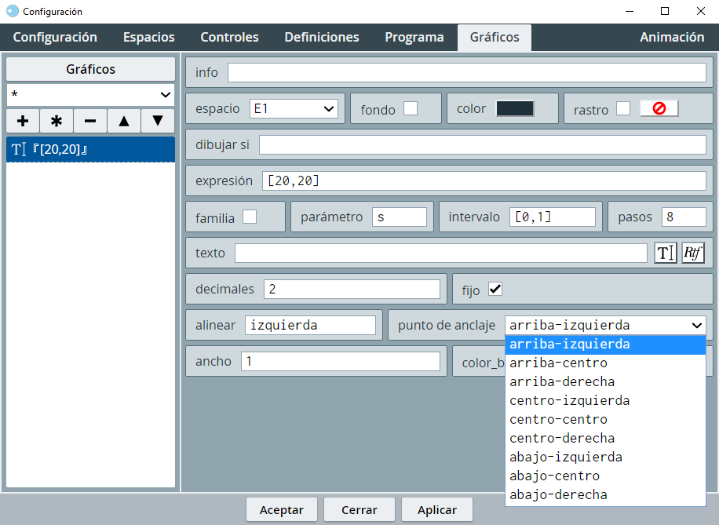
Paramétro para cambiar el punto de anclaje de la caja de texto.
Se agregaron dos parámetros a los puntos 3D, para colocar las etiquetas de texto respecto a una distancia y un ángulo.
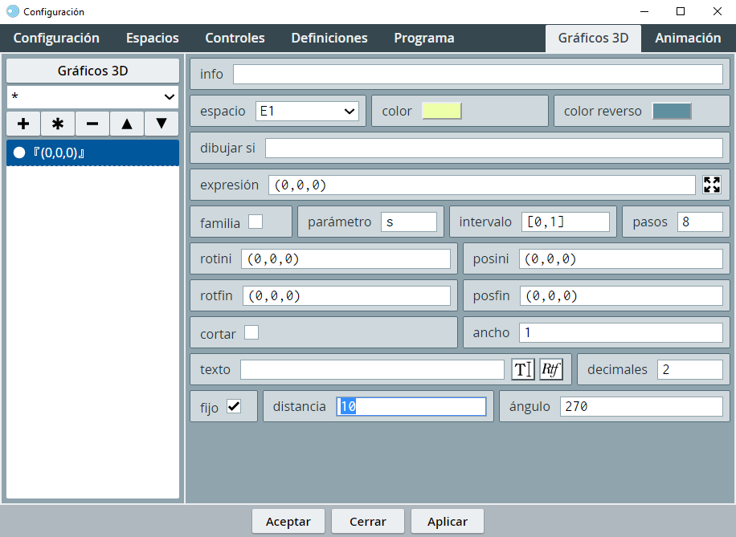
Paramétros para colocar las etiquetas de puntos 3D.
Se corrigió un error que ocurría al exportar a PDF, SVG y PsTricks, cuando la escena contenía superficies 3D.
Se agregó un nuevo elemento a las definiciones, la biblioteca, que permite incluir desde un archivo externo definiciones de funciones, vectores y matrices.
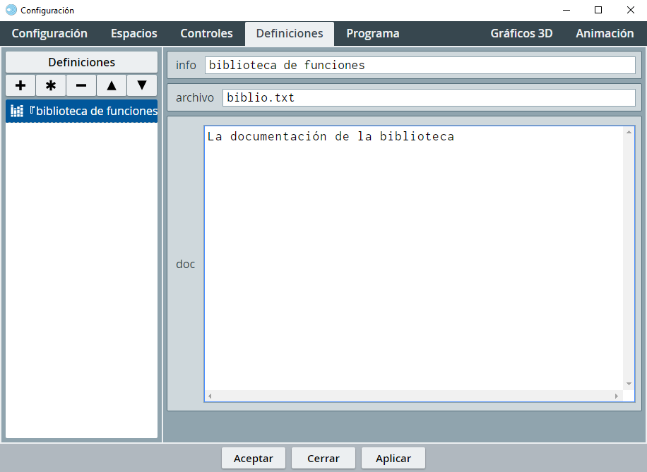
El nuevo elemento biblioteca.
Se ajustaron las tipografías utilizadas para exportar a PDF, para igualar la presentación de la escena con el PDF generado.
Se agregó nueva funcionalidad para que en el listado de elementos (espacios, controles, definiciones, programa, gráficos y gráficos 3D) al colocar el mouse sobre un elemento, se muestra el contenido del atributo info, con la finalidad de presentar una mejor descripción de un elemento.
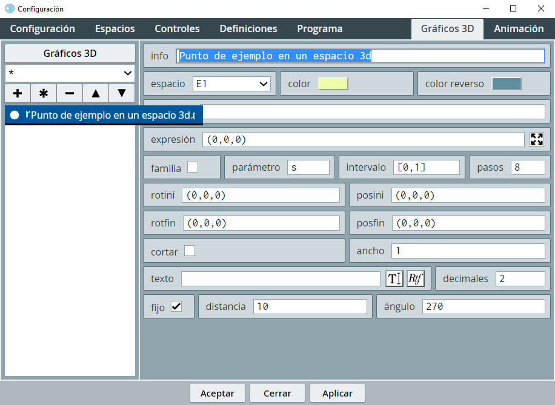
Mejora para presentar la información de un elemento en la lista de elementos.
Se detecto y corrigió un error al exportar a PDF, que ocurría cuando la escena contenía un texto con una posición fuera del área visible.
Se mejoró el soporte para las líneas punteadas al exportar una escena a SVG y PDF.
Se ajustaron las posiciones de los textos al exportar a PsTricks y PDF.
Se cambió la programación y el estilo de los cuadros de dialogo, para volverlos más homogéneos.
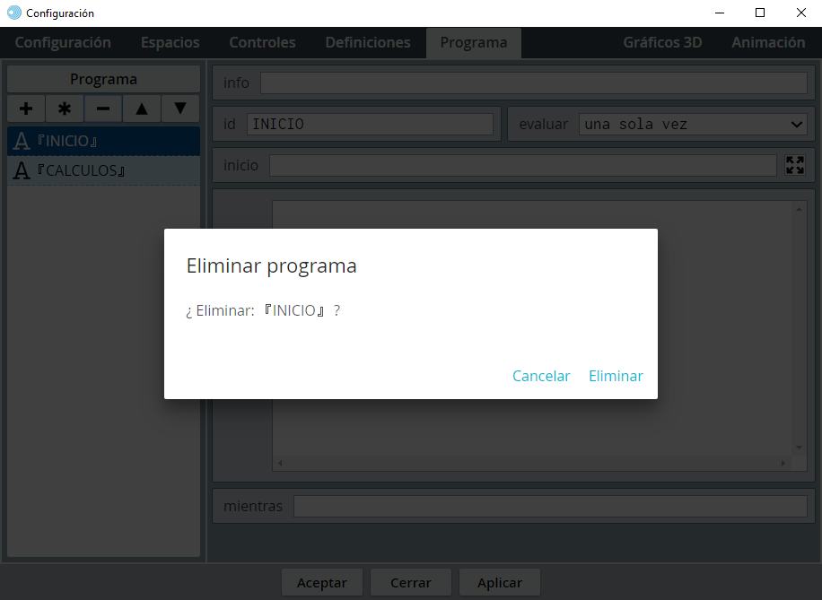
Cambio en el estilo de los cuadros de diálogo.
Versión v0.20
A partir de esta versión el código del editor y del intérprete (descartes-min.js) se actualizan desde internet.
Los colores en el editor muestran la transparencia que tienen utilizando un patrón de cuadros en el fondo, similar a lo que utilizan otras aplicaciones gráficas.
Las áreas de edición de código permiten comentarios colocando dos diagonales (//) antes del código a comentar.
El código de un macro se inserta en el documento HTML, para permitir su uso de forma local en los navegadores.
Se agregaron las tipografías Tinos, Cousine y Arimo, en ttf para mejorar el conjunto de caracteres de la exportación a PDF.
Se agregó una opción para exportar una escena como un macro de Descartes.
Adición de iconos para el listado de definiciones y programas.
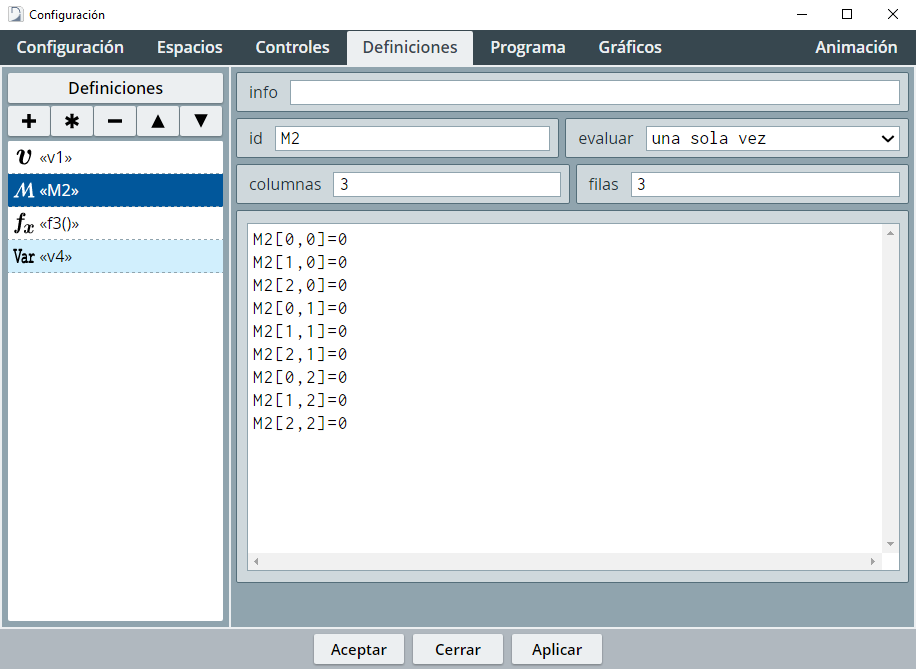
Iconos para definiciones y programa.
Mejoras en el editor de colores. Se facilita la introducción de expresiones en los colores y se permite copiar y pegar la representación en hexadecimal de un color.
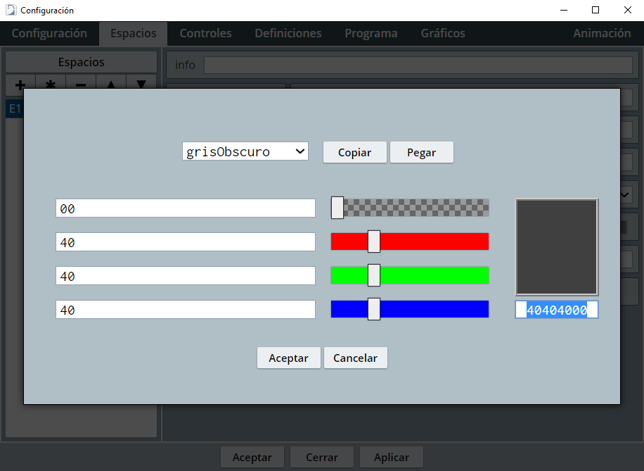
Editor de colores.
Adición de una opción para usar el intérprete (descartes-min.js) desde un lugar definido por el usuario.
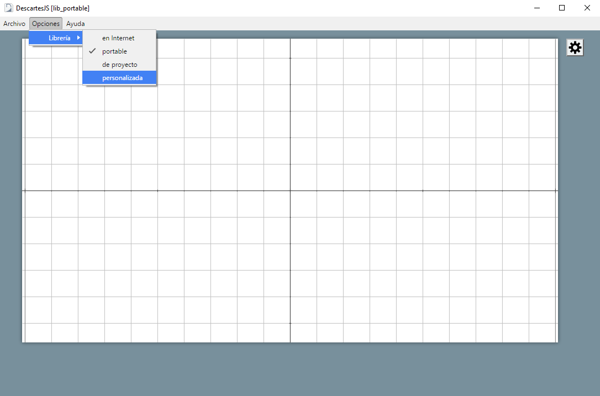
Submenú para que seleccionar el interprete desde una ubicación definida por el usuario.
Se agregó un parámetro a los gráficos que dibujan contornos, para especificar si el estilo de la línea es sólido o punteado.
Paramétro para modificar el estilo de la línea que se dibuja en algunos gráficos 2D.
Versión v0.19
Diseño y desarrollo de un editor de textos con formato e inclusión de fórmulas.
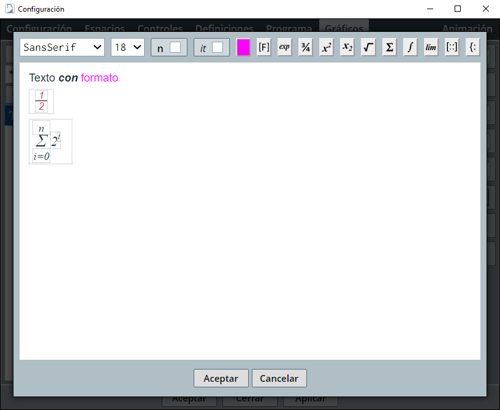
Editor de texto enriquecido.
Versión v0.18
Se creó un submenú con opciones para exportar, mejorando la organización de la interfaz gráfica. Y se agregó la opción para exportar una escena como un PDF.
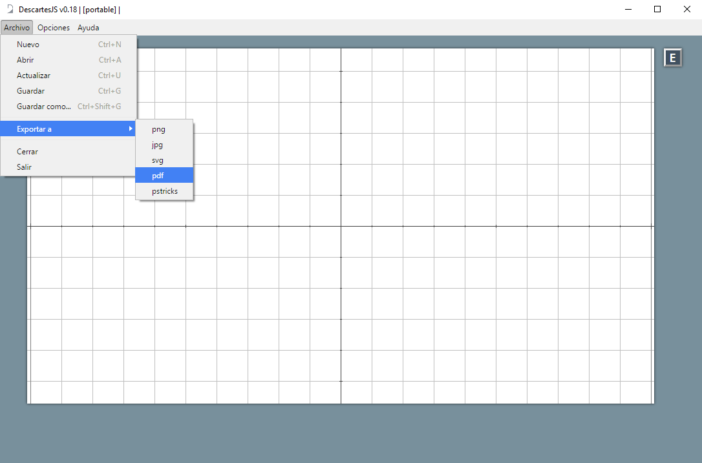
Submenú con todas las opciones de exportación.
Correcciones en el código que exporta a PsTricks y SVG, mejorando errores en la generación de segmentos y puntos.
Corrección en la clonación de objetos gráficos, para evitar la adicción de parámetros extra.
Al modificar un espacio por medio de su código, los valores de los menús que muestran los nombres de los espacios se actualizan.
Se agregó código para abrir y editar escenas de Descartes 2.
Se pueden abrir escenas que utilizan la etiqueta <applet> en lugar de <ajs> para almacenar la configuración de una escena de Descartes.
Versión v0.17
Se mejoró la interfaz del editor que muestra el código de los elementos de una escena.
El atributo parámetro en los controles, muestra un editor de código mejorado.
Preparación del archivo paramEditor.css para el manejo de temas de colores para el editor.
Se mejoró el manejo de las animaciones, ya que si hay una animación corriendo y se presiona el botón que muestra la configuración de la escena, entonces la animación se detiene. Al presionar el botón "aceptar" en el editor de configuración la animación vuelve a iniciar, pero si se presiona "aplicar" la animación no se ejecuta. Esto permite que las animaciones no se ejecuten mientras se modifican los atributos de una escena.
Corrección en la generación de código PsTricks, los textos con borde generaban errores que bloqueaban el editor.
En el listado de gráficos se agregaron iconos en SVG para presentar visualmente el tipo de elemento y facilitar la identificación de los elementos gráficos.
Se agregaron iconos en el listado de gráficos de una escena.
Se desarrollo un editor de texto simple, que permite cambiar la tipografía, el tamaño y el estilo del texto.
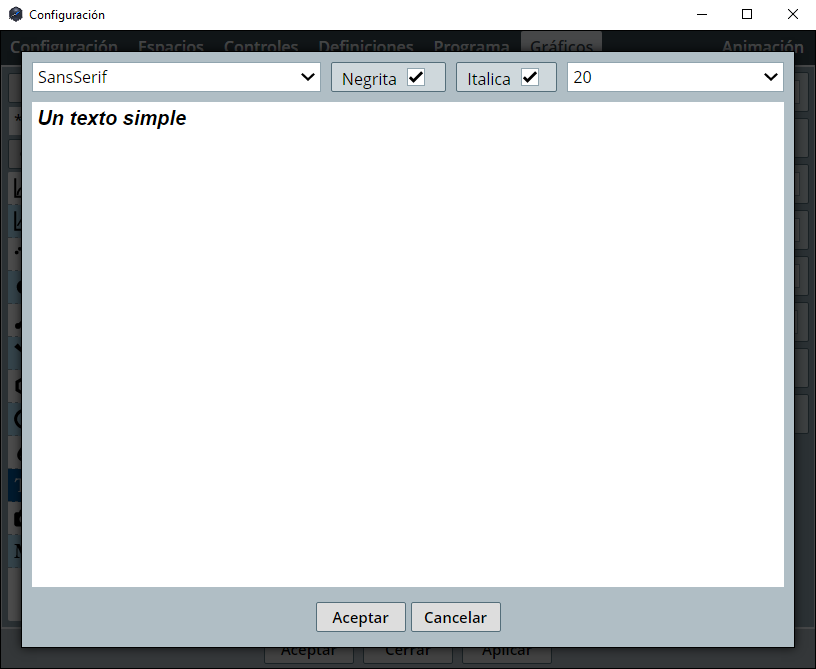
Editor de texto simple.
Opción para exportar la escena como una imagen SVG.
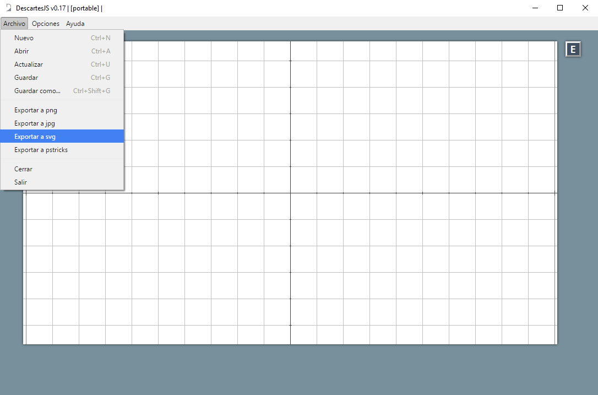
Menú para exportar la escena como SVG.
Versión v0.016
Se realizaron cambios en el diseño gráfico del editor, se modifico la paleta de colores y la distribución de los elementos.
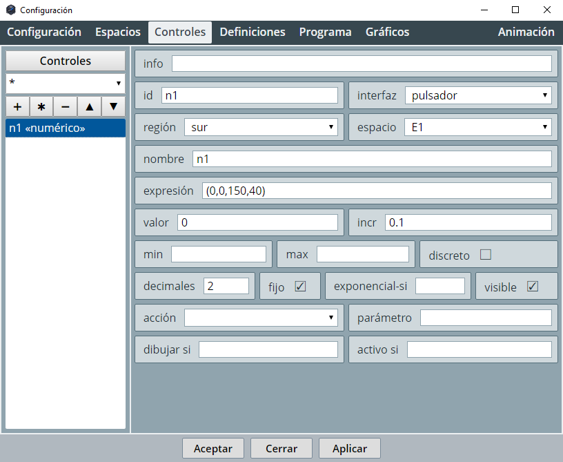
Mejora en la presentación de la interfaz gráfica.
La casilla de verificación (checkbox) de la animación, habilita o deshabilita los parámetros de la animación.
Cuando se da clic en el atributo parámetro de los controles, se muestra un editor de código para ingresar su valor.
La pestaña "Botones" se renombro a "Configuración".
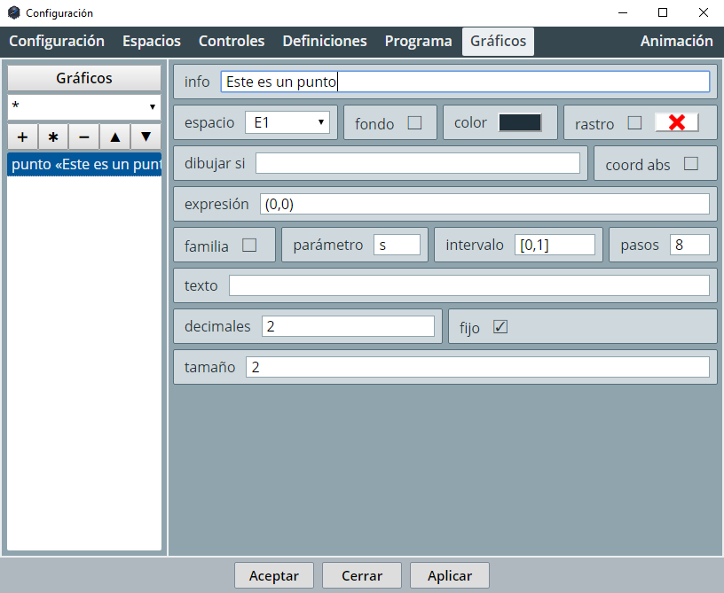
La pestaña "Botones" ahora se llama "Configuración".
Modificación en el listado de los gráficos, si el parámetro info no es vacío, entonces se muestra su contenido en la lista.
Versión v0.15
Se cambio la tipografía del editor por OpenSans, haciendo que la apariencia general del editor sea homogénea en los diferentes sistemas operativos.
Se corrigió el guardado de cadenas que contenían una comilla simple ('), ya que había que convertirlas en "&squot;" para interpretar correctamente los valores de cadenas.
Se corrigió un problema al clonar controles, ya que se agregaban los parámetros de un pulsador, aunque el control fuera de otro tipo.
Se agregó la funcionalidad del filtrado de controles y objetos gráficos, dependiendo del espacio al que pertenecen.
Se mejoró el comportamiento en los menús cuando no tenían un valor valido, por ejemplo cuando tenían el nombre de un espacio inexistente.
Se realizaron cambios en la forma de acomodar los elementos de la interfaz gráfica, haciendo una reestructuración en los estilo CSS, para utilizar las nuevas prestaciones que CSS3 ofrece, en particular el modelo flexbox para colocar los diferentes componentes de la interfaz gráfica.
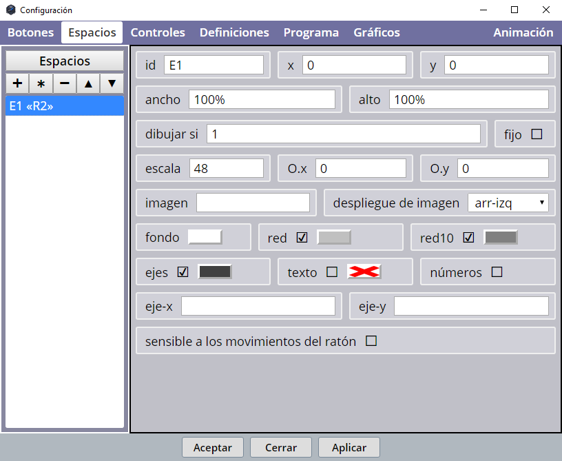
Mejora en el acomodo de los paramétros de configuración.
Se agregó el parámetro info a todos los objetos gráficos 3D, para poder documentar mejor las escenas.
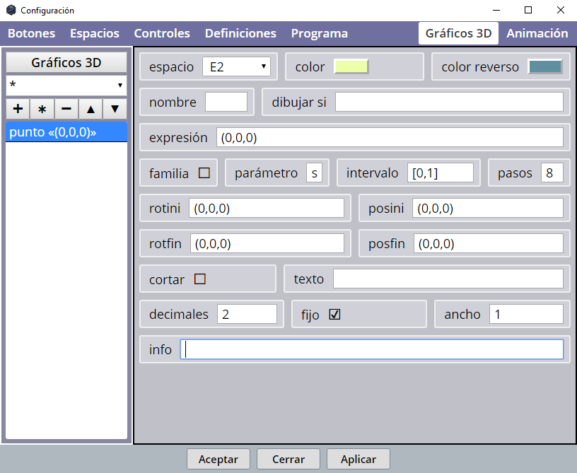
El parametro info en los paramétros de un punto 3D.
Se mejoró el escalado de varios elementos de edición, como el atributo hacer de funciones, algoritmos y animación.
Mejora en las funciones para agregar y clonar elementos.
Al crear un nuevo objeto, se presenta una sugerencia para el valor del identificador.
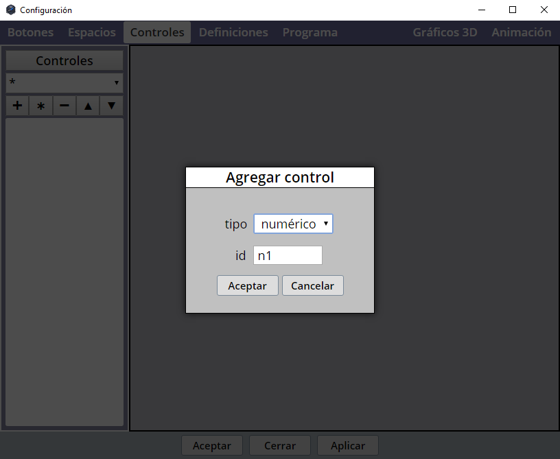
Sugerencia en el identificador al agregar un control.
Se agregó un menú de ayuda para mostrar la documentación de Descartes, la cual se encuentra en internet.
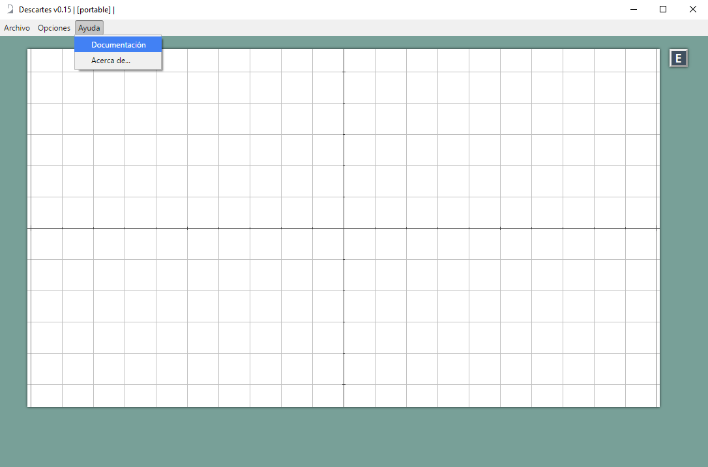
Menú de ayuda que abre una ventana del navegador predeterminado para mostrar la ayuda del editor.
Los botones que muestran el contenido de espacios, controles, definiciones, programas, gráficas y gráficas 3D, ya muestran el código de sus elementos y permiten modificarlos, como lo hace el editor Java de Descartes.
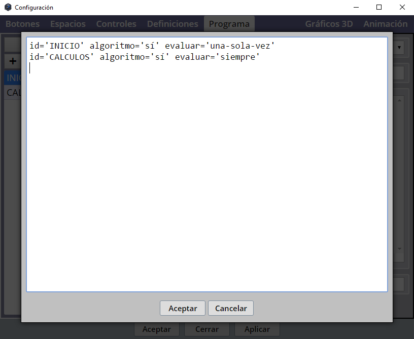
Diálogo que muestra el código de configuración de los objetos de la escena.
Versión v0.14
Se completo el código necesario para exportar a PsTricks, permitiendo exportar los espacios 2D con todos los gráficos excepto el relleno y las imágenes (ya que no hay código en equivalente), y también se pueden exportar los espacios 3D con todos sus gráficos.
Se agregó un panel de configuración para exportar a PsTricks, que permite seleccionar si se exporta usando escala de grises y si se quiere reemplazar el color del fondo de los espacios, por blanco. Esto con la finalidad de crear escenas que sirvan como esquemas para documentos en tex.
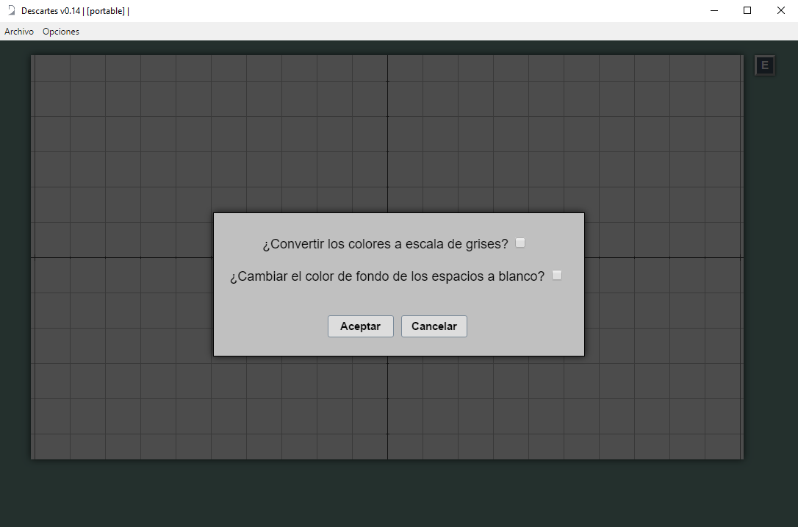
Diálogo para configurar paramétros para exportar la escena como PsTricks.
Los colores pueden copiarse y pegarse entre diferentes instancias del editor. Lo que facilita el copiado entre varias escenas.
Al guardar una escena, también se agrega el intérprete (descartes-min.js), respetando la opción seleccionada en el menú "Opciones".
Primeros pasos para la actualización automática por internet, se actualiza de forma oculta y automática el archivo descartes-min.js.
Versión v0.13
Se reacomodaron los archivos fuente del editor, con la idea de facilitar, en el futuro, el servicio de actualizaciones desde internet.
Se mejoró el código PsTricks que se genera al exportar una escena. Es posible exportar los espacios 2D y sus gráficos, excepto los textos, el relleno, las imágenes y los macros; y se pueden exportar los espacios 3D y sus gráficos excepto los textos y los macros.
Se corrigió un problema en el aumento del consumo de memoria, ya que se creaban ventanas y no eran destruidas correctamente.
Versión v0.12
Se agregó un cuadro de dialogo que al intentar cerrar el editor, si la escena tiene cambios, pregunta si se desean guardar antes de cerrar.
Se desarrolló el código necesario para capturar una imagen de una escena y se agregó un menú con las opciones de exportar a png y jpg. Además se iniciaron pruebas para la generación de código PsTricks.
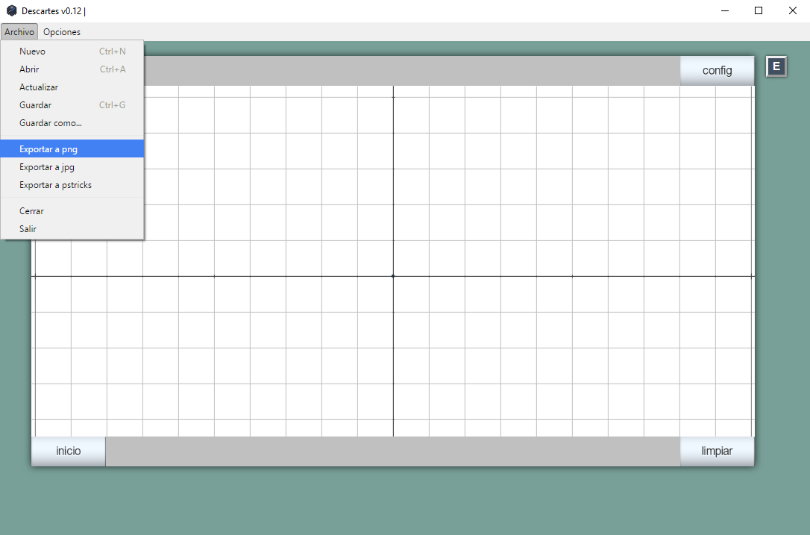
Menús para exportar la escena como png, jpg y PsTricks.
A partir de esta versión es posible tener múltiples instancias del editor, lo cual es útil cuando se quieren copiar partes de una escena en otra.
Versión v0.11
Mejora en el manejo de las operaciones de nuevo y abrir. En el caso que la escena tenga cambios se pregunta "¿Desea guardar los cambios?".
Diálogo que pregunta si se quieren cambiar los cambios en una escena.
Adición del menú de "Opciones", el cual permite elegir la forma en la que se incluye el intérprete (descartes-min.js).
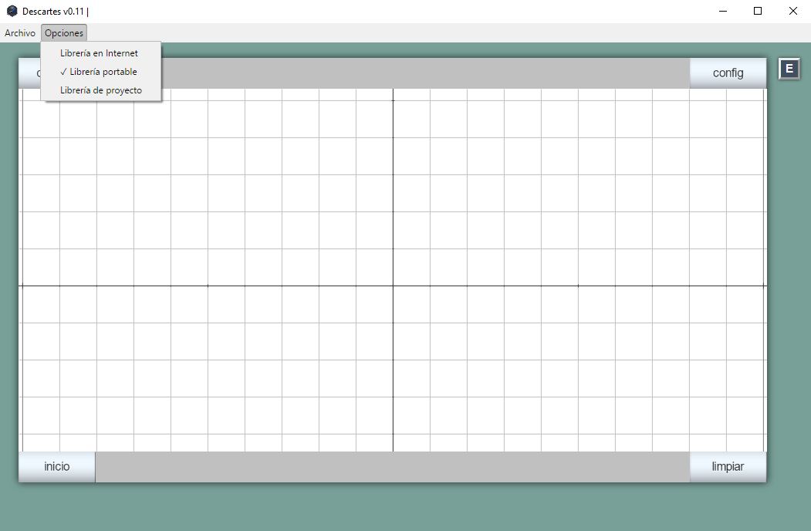
Menú de opciones para escoger el tipo de descartes-min.js a utilizar.
Versión v0.10
Correcciones en el código para el guardado de datos, a partir de esta versión ya es confiable abrir y guardar una escena.
Al agregar o borrar espacios, en el panel de configuración de los controles y gráficos la lista de nombres de espacios se actualiza.
Se agregó la funcionalidad, de que la pestaña de configuración de gráficos se oculta cuando no hay espacios 2D, y lo mismo para los gráficos 3D cuando no hay espacios 3D.
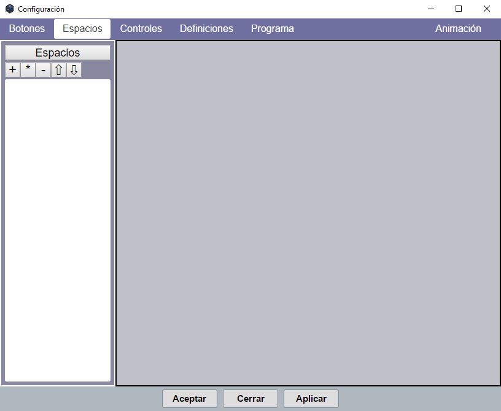
Las pestañas de configuración de gráficos y gráficos 3D no se muestran cuando no hay un espacio correspondiente.
Versión v0.09
Se efectuaron modificaciones al código para su correcto funcionamiento en la nueva versión de NW.js (0.13), ya que el proyecto NW.js reestructuró su base de código, para incorporar nuevas características y mejorar la estabilidad.
Se reorganizaron diversos archivos internos, para mejorar la modularidad del código.
Versión v0.08
Se agregó el componente de área de texto, diseñado para manejar las diferentes peculiaridades de los atributos inicio, hacer, mientras y expresión, en las definiciones y programa.
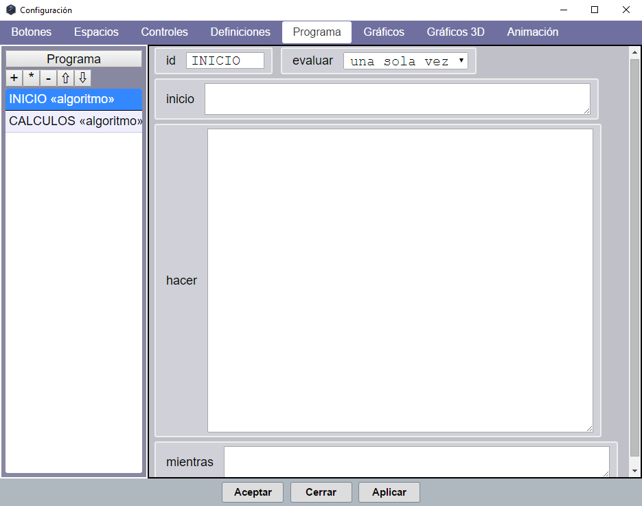
Componentes de área de texto, colocados en el panel de edición de un algoritmo.
Se realizaron mejoras en el analizador sintáctico (parser) y en el manejo de las entidades HTML, por ejemplo: la entidad "&squot;" para las comillas simples ('), causaba errores al encontrarse en el código HTML de una escena.
Versión v0.07
Se agregó a la interfaz de usuario un componente para editar los colores.
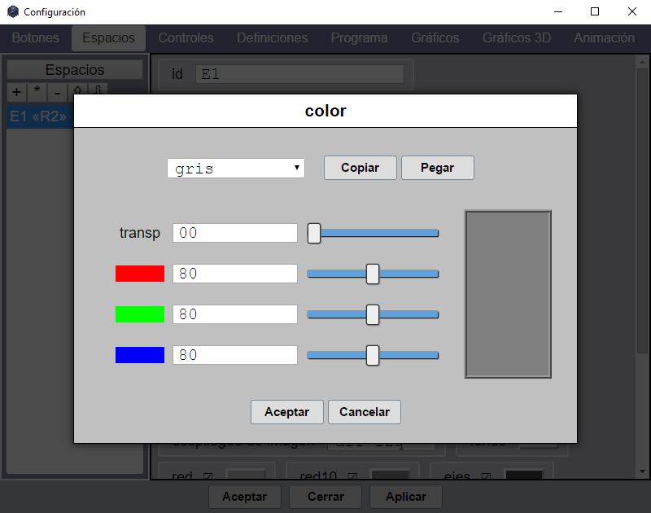
Editor de colores.
En los atributos de controles y gráficos, se agregó la lista con los nombres de los espacios.
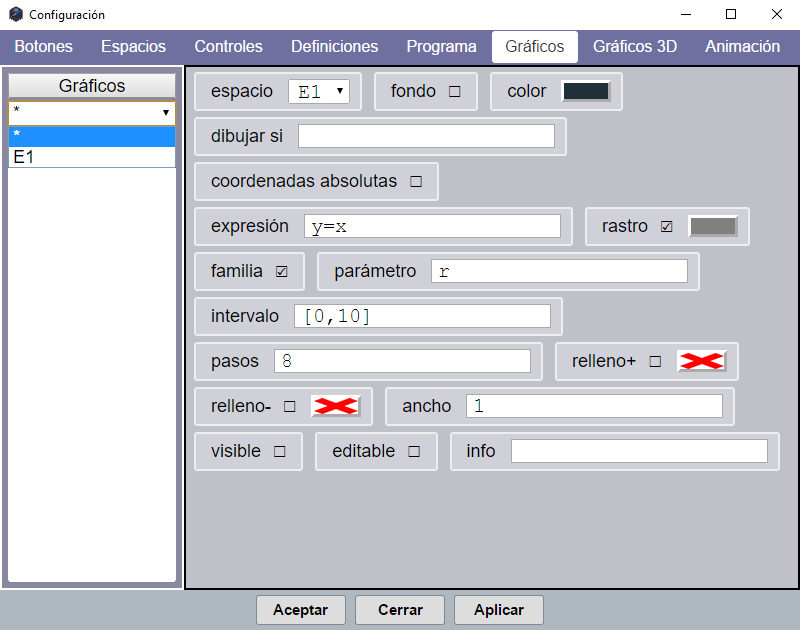
Lista de nobres de los espacios en el panel de gráficos.
Se mejoró la presentación de los elementos en la lista de objetos.
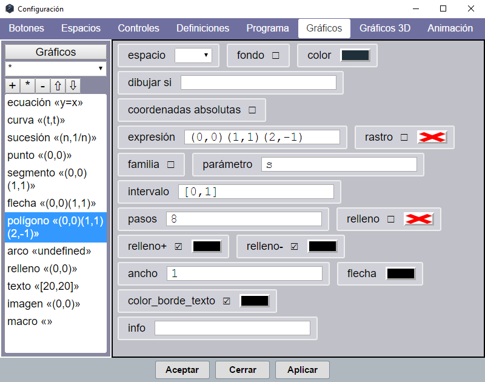
Mejora en la lista de elementos en el panel de gráficos.
Versión v0.06
Aprovechando la abstracción del lenguaje realizada en la versión anterior, se agrega la traducción al español de todos los parámentros en la interfaz de usuario.
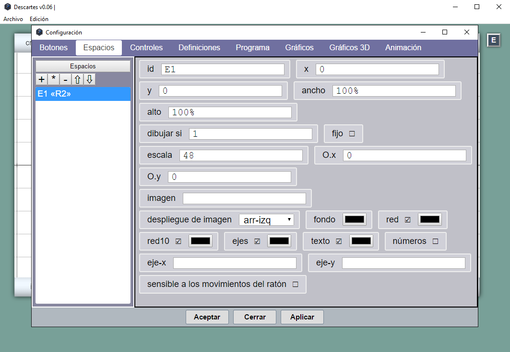
Parámetros de configuración de un espacio de tipo R2 traducidos al español.
Se agregaron cuadros de diálogo para agregar y borrar objetos en una escena, completando las operaciones básicas para la manipulación de la lista de elementos en una escena.
Versión v0.05
Se pueden leer y modificar los valores de los parámetros de configuración de una escena.
Se puede manipular la lista de objetos en una escena, permitiendo clonar, borrar y mover los objetos de la escena.
Es posible agregar algunos objetos de forma predeterminada, ya que aún no hay menú para agregar el objeto que se quiere agregar.
La estructura interna de los parámetros de configuración se abstrae del lenguaje en el que fue desarrollada la escena, para posteriormente tener el mismo soporte multilenguaje que el editor de Descartes en Java.
Versión v0.04
La ventana de edición de parámetros ya muestra los valores de configuración de una escena. Aún no se pueden realizar cambios en la configuración.
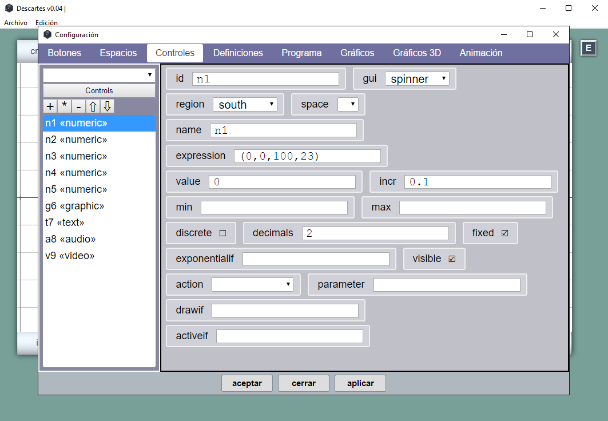
Configuración de un control tipo pulsador obtenida de una escena leída de disco.
Versión v0.03
Se replicó la ventana de edición de parámetros con la misma distribución y estilo gráfico que el editor original en Java. Aún no se cuenta con funcionalidad para editar parámetros.
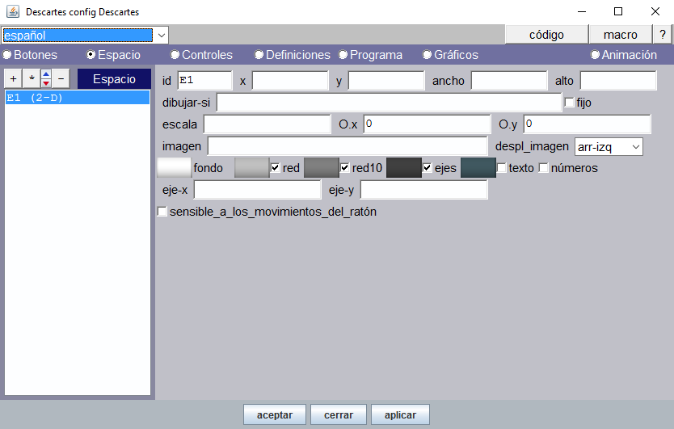
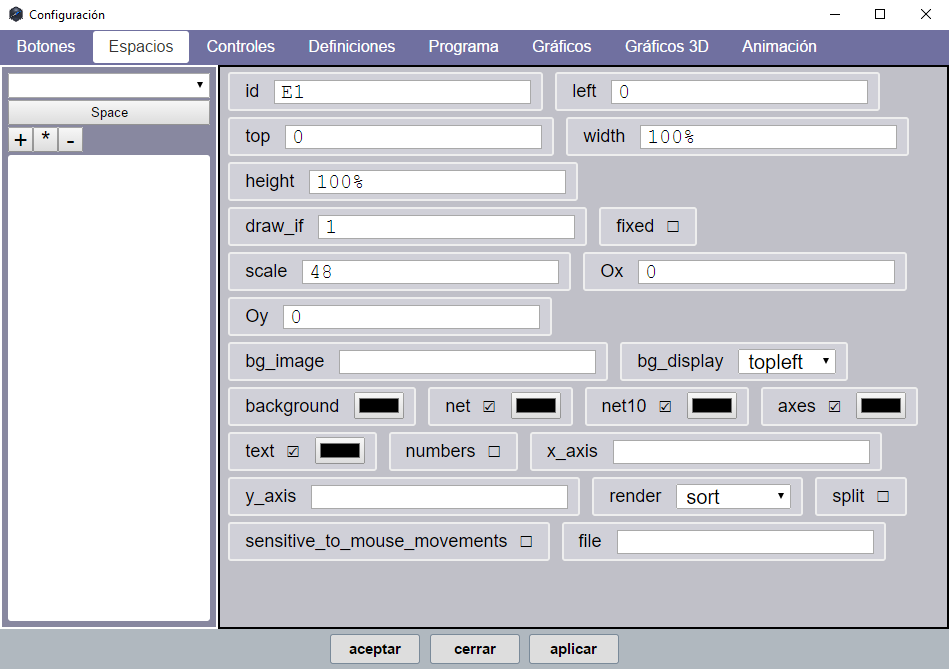
Comparación entre la ventana de edición de parámetros del editor original (imagen superior) y el nuevo editor (imagen inferior).
Versión v0.02
Se agregó al menú la funcionalidad de abrir escenas de Descartes. El editor funciona como un visualizador local de recursos de Descartes.
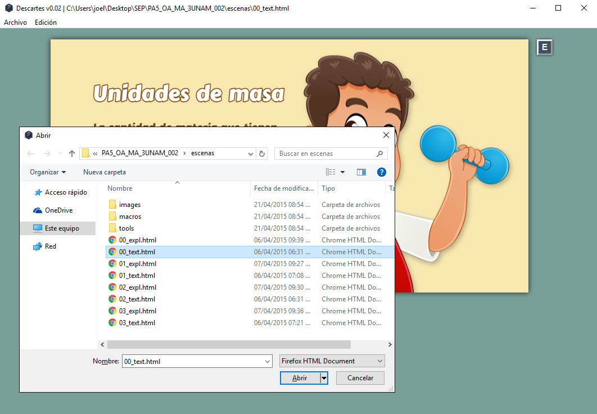
Ejemplo del editor con el cuadro de diálogo que permite abrir una escena de Descartes.
Versión v0.01
Prueba inicial de uso de node-webkit para la creación de aplicaciones de escritorio con HTML, CSS y JavaScript. Solo se muestra un escena fija creada con Descartes y una barra de menú. El editor no contiene ningún tipo de funcionalidad más allá de la interacción con la escena.
Interfaz gráfica del editor Descartes desarrollado con Java.Primera versión de la interfaz gráfica del nuevo editor Descartes desarrollado con JavaScript, HTML y CSS.